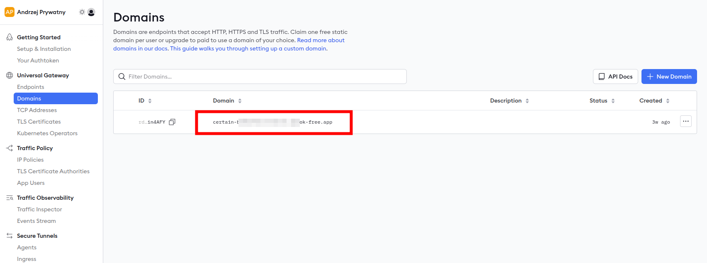
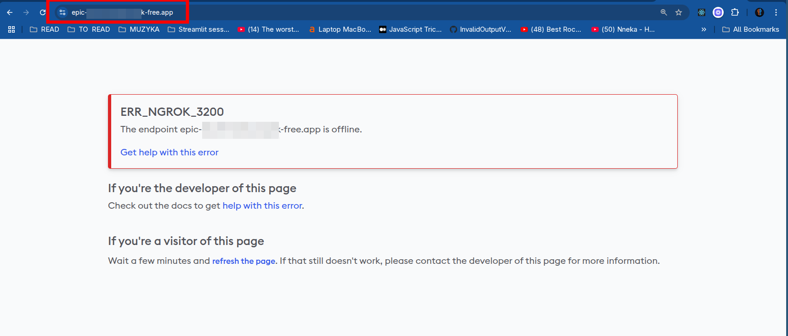
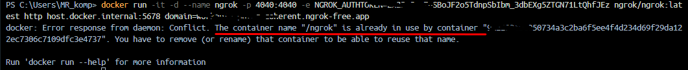
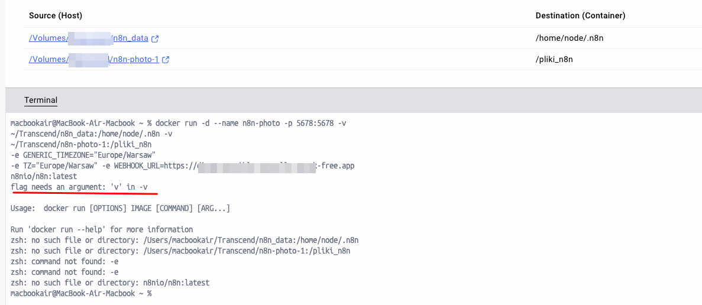
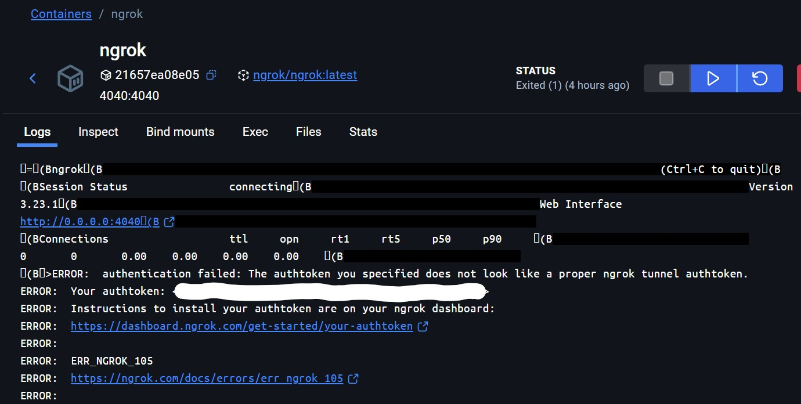
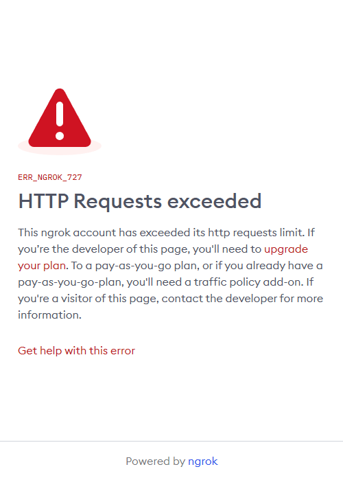
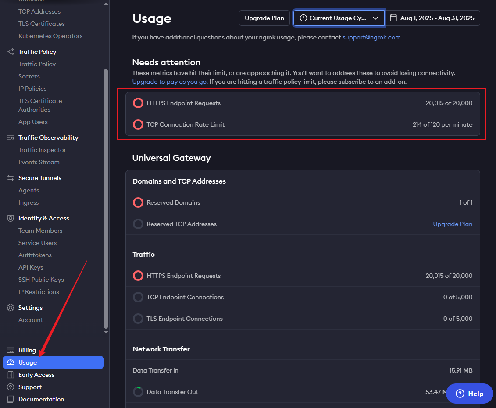

Rozwiązania problemów z ngrok¶
Nie wiem jaką mam domenę w ngrok¶
- Żeby znaleźć naszą domenę ngrok należy zalogować się na stronę ngrok i przejść do zakładki domains 
Ngrok mi nie działa¶
-
Po wejściu na domenę ngrok widzę następującą stronę 
-
W takiej sytuacji upewnij się, że masz uruchomiony kontener
ngrokw Docker Desktop - Jeśli nie masz uruchomionego kontenera
ngrok, to uruchom go, a następnie odśwież stronę
Kontener ngrok mi się uruchamia i potem się zatrzymuje (resetuje się) w Docker Desktop¶
- W takiej sytuacji sprawdź
logikontenera, czyli informacje, które raportuje podczas działania - Wpisz w terminalu
docker logs ngroki przeczytaj, czy ngrok zgłasza jakiś problem. Wklej ten komunikat do ChatGPT i postaraj się zrozumieć, co może być problemem. W razie trudności opisz problem na Discord i załącz logi
Uruchamiam ngrok i wyskakuje mi taki błąd - the container name "/ngrok" is already used¶

- Błąd ten oznacza, że masz już uruchomiony kontener o nazwie
ngrok - Żeby wyświetlić wszystkie kontenery otwórz Docker Desktop lub wpisz w terminal i potwierdź enterem:
docker ps -a - Żeby pozbyć się błędu usuń istniejący kontener ngrok. Możesz to zrobić komendą:
docker rm -f ngrok - Następnie, żeby uruchomić nowy kontener, wywołaj poniższą komendę w terminalu. Pamiętaj, żeby podmienić
TWOJ_TOKEN_AUTENTYKACYJNY_NGROKiTWOJA_DOMENA_W_NGROKdocker run -it -d --name ngrok -p 4040:4040 -e NGROK_AUTHTOKEN=TWOJ_TOKEN_AUTENTYKACYJNY_NGROK ngrok/ngrok:latest http host.docker.internal:5678 --domain=TWOJA_DOMENA_W_NGROK
Uruchamiam ngrok i wyskakuje mi błąd - pojawiają się dziwne znaczki i minusy¶
Taki  lub taki
PS C:\Users\zminda> docker run -it -d --name ngrok \
>> -p 4040:4040 -e \
>> NGROK_AUTHTOKEN= 00000000000000000 \
>> ngrok/ngrok:latest \
>> http host.docker.internal:5678 \
>> --domain= lark-sdfsdfsd-snake.ngrok-free.app
>>
At line:6 char:3
+ --domain= lark-sdfsdsfds-snake.ngrok-free.app
+ ~
Missing expression after unary operator '--'.
At line:6 char:3
+ --domain= lark-sdfsdfsd-snake.ngrok-free.app
+ ~~~
Unexpected token 'domain=' in expression or statement.
+ CategoryInfo : ParserError: (:) [], ParentContainsErrorRecordException
+ FullyQualifiedErrorId : MissingExpressionAfterOperator
- Zazwyczaj oznacza to błąd w formatowaniu komendy. Uruchom poniższą komendę pamiętając, żeby podmienić
TWOJ_TOKEN_AUTENTYKACYJNY_NGROKiTWOJA_DOMENA_W_NGROK. Nie dawaj spacji przed ani po znaku =
docker run -it -d --name ngrok -p 4040:4040 -e NGROK_AUTHTOKEN=TWOJ_TOKEN_AUTENTYKACYJNY_NGROK ngrok/ngrok:latest http host.docker.internal:5678 --domain=TWOJA_DOMENA_W_NGROK
Niepoprawny token autentykacyjny¶
-
Jeśli wyskakuje błąd
authentication failed: The authtoken you specified does not look like a proper ngrok tunnel authtokento oznacza, że token autentykacyjny jest niepoprawny.  -
PAMIĘTAJ! Wpisz "goły" token autentykacyjny, bez ekstra spacji lub dodawania
<lub>. Przykładowa instrukcja dla token123secret123secret123secret123oraz domenymoj-dostepny-do-uzycia-w-ngrok.ngrok-free.app:docker run -it -d --name ngrok -p 4040:4040 -e NGROK_AUTHTOKEN=123secret123secret123secret123 ngrok/ngrok:latest http host.docker.internal:5678 --domain=moj-dostepny-do-uzycia-w-ngrok.ngrok-free.app
Przekroczono limit zapytań HTTP w ngrok (ERR_NGROK_727)¶
-
Jeśli po wejściu na swoją domenę widzisz komunikat jak poniżej, oznacza to, że Twoje konto przekroczyło dopuszczalną liczbę zapytań HTTP w bieżącym okresie rozliczeniowym: 
-
Wejdź na dashboard ngrok i przejdź do zakładki
Usage, aby potwierdzić przekroczenie limitów. Zwróć uwagę na pozycjęHTTPS Endpoint RequestsorazTCP Connection Rate Limit: 
Co to oznacza?¶
- Limit zapytań zależy od planu. W planie darmowym można go przekroczyć podczas testów lub gdy z aplikacji korzysta wielu użytkowników/botów.
Prawdopodobna przyczyna¶
Po uruchomieniu kontenera z ngrok, przechwytuje on również anonimowy ruch diagnostyczny przesyłany do n8n.
Jak to naprawić?¶
Pomocne jest wyłączenie wysyłania anonimowego ruchu diagnostycznego do n8n.
Żeby to zrobić należy ustawić zmienną środowiskową N8N_DIAGNOSTICS_ENABLED na wartość false.
Źródła: - Dokumentacja n8n
Kroki:
- Usuń istniejący kontener n8n z Docker Desktop
-
Uruchom nowy kontener n8n z dodatkową zmienną środowiskową
N8N_DIAGNOSTICS_ENABLEDustawioną nafalseTip
Podpowiedź
Jeśli nie pamiętasz jak tworzyć kontener n8n od zera wróć do lekcji Uruchamiamy n8n z Docker DesktopLUB
Zerknij na ten przykład z
WEBHOOK_URL
Co jeśli już przekroczyłam/przekroczyłem limit?¶
-
Utwórz nowe darmowe konto ngrok: Jeśli osiągnięty limit blokuje dalszą naukę, rozważ utworzenie nowego darmowego konta ngrok na inny adres e-mail. Pamiętaj o ustawieniu zmiennej środowiskowej
N8N_DIAGNOSTICS_ENABLEDnafalse, żeby problem się nie powtórzył. -
Zaczekaj na reset limitu: Wstrzymaj ruch do tunelu (czyli zamknij publiczne udostępnienia - kontener ngrok) i poczekaj do resetu limitu w kolejnym cyklu rozliczeniowym (widoczny w prawym górnym rogu strony
Usage- zazwyczaj jest to kolejny miesiąc).